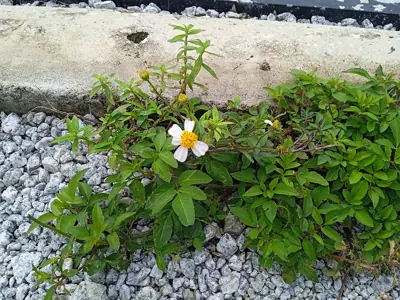

pranet · 出典付きの植物図鑑
コセンダングサ
Bidens pilosa L. · Asteraceae

Bidens pilosa is an annual species of herbaceous flowering plant in the daisy family Asteraceae. Its many common names include hitch hikers, black-jack, beggarticks, farmer's friends and Spanish needle, but most commonly referred to as cobblers pegs. It is native to the Americas but is widely distributed as an introduced species in other regions including Eurasia, Africa, Australia, South America and the Pacific Islands, and is classified as an invasive species in some regions of the world.
出典: Wikipedia 英語版「Bidens pilosa」 · CC BY-SA 4.0
異名: Acocotli quauhuahuacensis Hernandez, Bidens abadiae DC., Bidens abortiva Schumach. & Thonn., Bidens adhaerescens Vell., Bidens africana Klatt, Bidens alausensis Kunth, Bidens arenaria Gand., Bidens arenicola Gand., Bidens aurantiaca Colenso, Bidens barrancae M.E.Jones, Bidens bimucronata Turcz., Bidens bonplandii Sch.Bip., Bidens brachycarpa DC., Bidens calcicola Greenm., Bidens californica DC., Bidens cannabina Lam., Bidens caracasana DC., Bidens caucalidea DC., Bidens chilensis DC., Bidens ciliata Hoffmanns. ex Fisch. & C.A.Mey.
同定や利用は自己責任でお願いします。この図鑑だけを根拠に野生の植物を食べないでください。
出典
- 学名: World Flora Online Plant List 2026-06 · CC0 1.0
- 名前: Wikipedia の記事名と Wikidata · CC0 1.0（Wikidata）。記事名は事実
- 説明: Wikipedia 英語版「Bidens pilosa」 · CC BY-SA 4.0
- 食用・毒性: World Checklist of Useful Plant Species (Diazgranados et al. 2020, RBG Kew) · CC BY 4.0
- 分布: World Checklist of Vascular Plants (WCVP), RBG Kew, version 2026-06-04 · CC BY 3.0
このページは pranet のデータから自動生成しています。コードは MIT、データは項目ごとのライセンス（説明）。